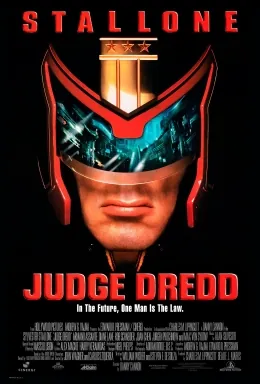

The genetics
Genetic engineering and cloning drive the film's plot. The secret Janus Project, run by the Judges' own Council, tried to engineer ideal law enforcers from a DNA blend of its best members, creating the hero and the villain as brothers with the same origin; one became a model Judge and the other a killer, an implicit point about the limits of genetic design. The project is then revived by a power-hungry Judge to produce a clone army, and Rico hijacks it with his own DNA. DNA forensics also matter: Dredd is convicted because the bullets carry his DNA, which is possible only because Rico shares his genes. The clones are adults grown rapidly in tanks, which is unscientific, and real clones would not be identical copies of someone's character. The science is not explored, but the film presents state-run genetic engineering as a dangerous tool of authoritarian power.
The story
In 2139, Mega-City One is policed by Judges who act as police, jury and executioner. Judge Dredd is framed for the murder of a journalist by Rico, his former best friend, whose execution Dredd had ordered years earlier but who has been secretly kept alive in a penal colony. Dredd is convicted when DNA on the bullets matches his own. On the way to prison, his dying mentor, former Chief Justice Fargo, reveals the truth: Dredd and Rico are clones created by the Janus Project, a secret genetic engineering programme designed to produce perfect Judges from DNA combining the best traits of the Council members. Judge Griffin, who concealed Rico's survival, uses Rico's killing spree to persuade the Council to reopen Janus and grow a clone army. Rico replaces the DNA sample with his own to create clones loyal to him. Dredd, the hacker Fergie and Judge Hershey destroy the lab, and Dredd kills Rico.